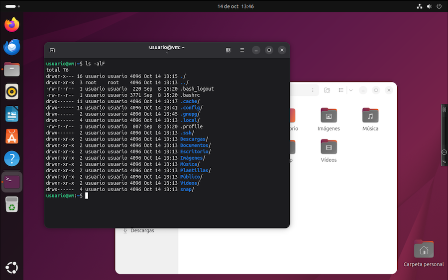
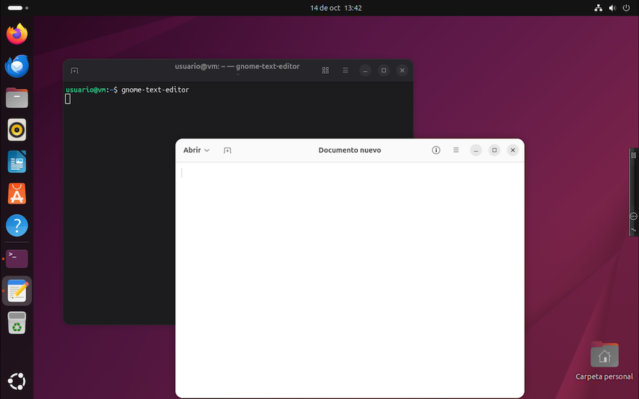
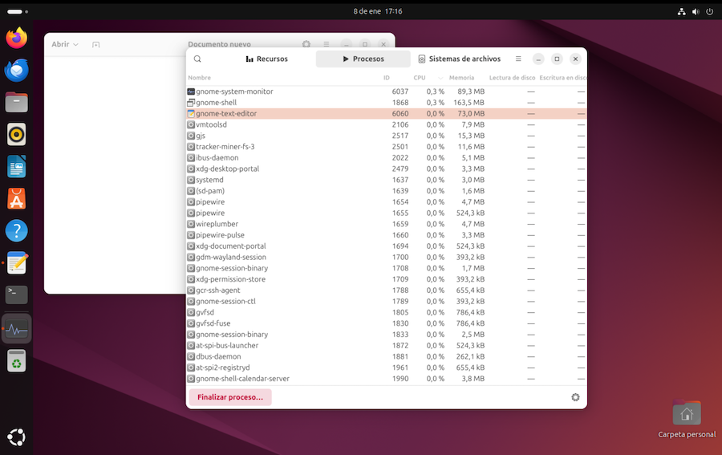
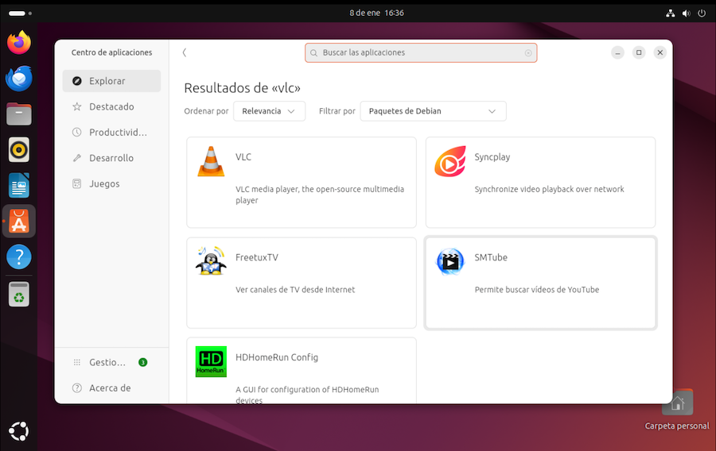
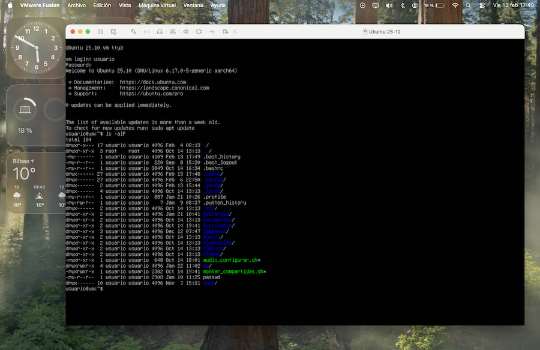

Terminal de comandos
Ya hemos visto que los sistemas operativos modernos suelen incluir un programa llamado “Terminal”, que emula un shell de texto y permite trabajar introduciendo comandos para ejecutar programas y realizar operaciones de administración del sistema.
El funcionamiento es mediante una sesión de diálogo: vamos tecleando comandos, que al ejecutarse, llenan la consola de texto que se va desplazando hacia arriba. En la siguiente imagen vemos un Terminal de comandos sobre otras ventanas del escritorio.
El Terminal se puede configurar para cambiarle los colores. Pulsar en el icono ☰ que despliega el menú, opción Preferencias. Yo he escogido la paleta de colores de Gnome.

Iniciando el terminal
El terminal de comandos es un programa que suele estar presente en todas las distribuciones Linux. Cada una tiene su propio terminal, pero básicamente todos funcionan de forma similar. En el caso de Ubuntu, encontraremos el programa de Terminal en la barra lateral del escritorio de Ubuntu (el Dock) o acudiendo a la parrilla de aplicaciones.
Lo primero que veremos es una línea de texto que muestra cierta información
seguida de un símbolo $. Suele ser algo así como:
usuario@maquina:carpeta $
A esto se le llama prompt. Termina con un carácter $, tras el cual, el
cursor parpadeante nos invita a teclear algún comando.
En mi caso, se muestra:
usuario@vm:~$
Durante el proceso de instalación del sistema, al usuario le he llamado tal cual, “usuario”, y a la máquina virtual la he denominado “vm”.
El símbolo ~ es un
alias que representa la carpeta principal del usuario. En este ejemplo, ~
equivale a /home/usuario. En todo momento, el prompt muestra cual es la
carpeta de trabajo. Finalmente se muestra el símbolo $.
Ejecutando programas
En principio, los programas se ponen en marcha tecleando su nombre y pulsando enter. Por ejemplo, el editor de textos suministrado por el escritorio Gnome se llama gnome-text-editor:
$ gnome-text-editor
Nota: en el texto de estos ejemplos mostramos el prompt $, pero no es
algo que tengamos que teclear.
Tras introducir el comando, se abre el editor en una nueva ventana, que convivirá con la del Terminal:

Siempre que pongamos en marcha un programa mediante un comando, el terminal se
queda a la espera de que dicho programa finalice y cierre su ventana,
tras lo cual, se recupera
el prompt para introducir más comandos. Podemos evitar este bloqueo añadiendo
un carácter & al comando:
$ gnome-text-editor &
Esto hace que la ejecución del editor sea en paralelo a la del terminal, de forma que este recupere el prompt inmediatamente.
Una ventaja de ejecutar programas desde el terminal de comandos es la posibilidad de pasarle información adicional:
$ gnome-text-editor /home/usuario/documentos/miArchivo.txt
En este ejemplo, al editor le pasamos como argumento el nombre del fichero a editar. Los argumentos añadidos nos permiten personalizar la ejecución del programa. Otro beneficio del terminal es que visualizaremos los posibles mensajes de error en la consola, que sin ella, no serían visibles.
¿Como averiguar cual es el nombre de cada programa? Hay varias formas. Una de ellas es mantenerlo en ejecución y poner en marcha otro programa que se llama “Monitor del Sistema”. En la pestaña “procesos” tenemos los nombres de los programas que están ejecutándose y su consumo de recursos:

Programas de consola
En el ejemplo anterior, usábamos el terminal de comandos para iniciar el procesador de textos en una ventana aparte. Pero hay programas que se ejecutan en la misma ventana del terminal. Por ejemplo, si introducimos el comando:
$ date
dom 13 mar 2022 15:34:15 CET
vemos que, al ejecutarse, muestra la fecha y hora del sistema, y seguidamente recupera el prompt.
Utilidad de los comandos
¿Para que sirven los comandos? Seamos realistas. Muchos usuarios prescindirán de esta herramienta. Si lo que pretendemos es utilizar el ordenador solo para navegar por Internet, editar documentos, o guardar nuestras fotos, todas estas actividades se manejan mejor pulsando sobre un icono, en lugar de tener que interaccionar con la computadora al estilo prehistórico, tecleando comandos.
Sin embargo, el valor real del terminal se pone de manifiesto en la administración y configuración del equipo. Algunas actividades administrativas cuentan con más opciones usando comandos, y hay operaciones que requieren de su uso. Para un usuario avanzado, los comandos dan acceso a un mundo lleno de posibilidades.
Veamos un ejemplo. Supongamos que queremos instalar el conocido reproductor de
video VLC. Ubuntu cuenta con un
programa llamado App Center (Centro de Aplicaciones) para gestionar la
descarga e instalación de software. Haciendo uso del mismo, podemos buscar
el programa en cuestión, seleccionarlo, y pulsar en el botón Instalar:

Nótese que se nos mostrará la opción de buscar en el repositorio de Debian (heredado por Ubuntu) o en la tienda de Snaps de Ubuntu.
Como alternativa, podemos hacer la misma tarea de instalación abriendo la ventana del Terminal y tecleando un comando:
$ sudo apt install vlc
Lo que significa:
- el símbolo
$es el prompt que nos invita a teclear algo. - la palabra sudo se antepone a todo comando que requiera ser ejecutado con permisos especiales. Hará que se nos pida nuestra contraseña. Es la abreviatura de “super user do.”
- el comando a ejecutar es apt, abreviatura de Advanced Package Tool. Es el nombre del programa usado para instalar software de los repositorios tipo Debian .
installes la operación a realizar.vlces el programa a instalar.
Al pulsar la tecla enter se ejecutará todo el proceso de descarga e instalación de forma automática. La ventana del Terminal se llenará de mensajes, informando sobre el proceso de descarga, y ejecutando todo el proceso automáticamente.
Contraseña
Los comandos precedidos por la palabra sudo obligan a introducir la contraseña de usuario, pero esta se recuerda durante unos minutos. Sucesivos comandos sudo solo requieren teclear la contraseña la primera vez.
Comando apt
El comando
aptes propio de Debian y derivados como Ubuntu. Otras distribuciones Linux utilizan comandos similares, como es el caso dednfen Fedora opacmanen Linux Arch.
A la vista de esto se diría que, para instalar software, resulta más cómodo usar el App Center, evitando tener que teclear comandos. Pero, ¿que pasa si periódicamente queremos hacer limpieza de nuestro equipo y reinstalar una veintena de nuestras aplicaciones favoritas? La tarea de instalación una por una puede resultar pesada.
En su lugar, podemos crear un archivo de texto que contenga comandos de instalación:
apt install vlc
apt install otro_programa
apt install otro_programa_2
Guardamos este archivo con un nombre, por ejemplo “instalar”, y lo ejecutamos con el comando:
$ sudo instalar
Ejecutando este script de comandos como si fuera un programa, todas las instalaciones se llevarán a cabo de forma automatizada.
Scripts
Este tipo de archivos de texto, con comandos a ejecutar, se llaman scripts.
Ejecutar scripts
En realidad, este comando no funcionaría por dos razones:
para ejecutar un script hay que especificar la carpeta donde lo hemos guardado:
$ sudo /home/usuario/instalartodo script requiere que le asignemos permisos de ejecución.
En el siguiente capítulo veremos los comandos con más detenimiento, y un ejemplo práctico sobre como crear un script.
Errores
Si tecleamos mal un comando, se mostrará un mensaje de error:
$ gkghj
Orden «gkghj» no encontrada
UNIX distingue entre mayúsculas y minúsculas. Un comando, un nombre de archivo, de directorio o cualquier otra cosa donde no respetemos el uso de las letras, no será reconocido y lo más probable es que obtengamos un mensaje de error. Por ejemplo, si escribimos el comando date con la primera letra en mayúsculas, obtenemos:
$ Date
Orden «Date» no encontrada
Algunos sistemas son suficientemente inteligentes como para sugerirnos opciones:
~$ Date
Orden «Date» no encontrada. Quizá quiso decir:
la orden «kate» del paquete snap «kate (23.08.4)»
la orden «date» del paquete deb «coreutils (9.4-3.1ubuntu1)»
la orden «late» del paquete deb «late (0.1.0-14)»
la orden «kate» del paquete deb «kate (4:24.08.1-0ubuntu1)»
Los programas forman parte de paquetes de software, instalados o instalables.
Programas no instalados
La mayoría de comandos son en realidad pequeños programas. Los repositorios de las distribuciones son enormes, y es materialmente imposible que lo tengamos todo instalado en nuestra computadora.
Es posible que alguno de los ejemplos que aquí se muestran sean programas que no vienen de serie con Ubuntu. Por ejemplo, el editor de textos “kate”:
$ kate
No se ha encontrado la orden «kate», pero se puede instalar con:
sudo snap install kate # version 23.08.4, or
sudo apt install kate # version 4:24.08.1-0ubuntu1
Si nos interesa ese programa, podemos hacer caso de la recomendación y ejecutar alguno de esos comandos:
$ sudo apt install kate
kate
Kate es un editor de textos que se suministra con el escritorio KDE. Aunque estemos usando Gnome, podemos instalar programas que acompañan a otros escritorios, si son de nuestro agrado.
Cerrar sesión interactiva
Podemos cerrar el terminal como cualquier otra ventana. También podemos hacerlo introduciendo el comando:
$ exit
Uso del ratón
Las antiguas consolas de texto funcionaban solo con el teclado. Las emulaciones de terminal contemplan el uso del ratón para poder seleccionar texto y realizar operaciones de cortar y pegar, pero no podemos utilizarlo para mover el cursor. Para desplazarnos en la edición de un comando tenemos que utilizar las teclas ← y →.
Historial de comandos
Siempre que ejecutamos un comando, el terminal lo recuerda y mantiene un registro de los últimos comandos introducidos. Pulsando ↑ y ↓, podemos recuperar comandos ejecutados, navegando hacia arriba y hacia abajo en la lista, siendo el punto de partida el comando más reciente. Una vez que recuperemos el comando deseado, podemos editarlo y ejecutarlo de nuevo pulsando enter.
Uso del teclado
Originalmente, en sistemas tipo Unix se utilizan cinco teclas para editar comandos:
- ← mueve el cursor una posición a la izquierda
- → mueve el cursor una posición a la derecha
- ⌫ borra carácter a la izquierda del cursor
- del borra carácter a la derecha del cursor
- enter ejecuta el comando
Dependiendo de la configuración de nuestro sistema, podemos tener otras combinaciones de teclas adicionales. Para mover el cursor:
- ctrl+a va al inicio de la línea.
- ctrl+e va al final de la línea.
- ctrl+b mueve el cursor un carácter a la izquierda. Equivale a ←.
- ctrl+f mueve el cursor un carácter a la derecha. Equivale a →
- alt+b mueve el cursor una palabra a la izquierda.
- alt+f mueve el cursor una palabra a la derecha.
Para borrar texto:
- ctrl+d borra el carácter a la derecha del cursor. Equivale a del
- ctrl+h borra el carácter a la izquierda del cursor. Equivale a ⌫
- ctrl+u borra todo el texto a la izquierda del cursor.
- ctrl+k borra todo el texto tras el cursor.
- alt+⌫ borra palabra a la izquierda
- ctrl+w borra palabra a la derecha
- ctrl+_ deshacer
Detener un comando
Cuando ejecutamos un comando en el terminal, el sistema se queda a la espera de que termine, para volver a mostrar el prompt. Para desbloquearlo, tendremos que finalizar la ejecución del programa.
En el caso de programas de consola, podemos abortarlos pulsando las teclas ctrl+c, siempre que la ventana de Terminal sea la activa y tenga el foco del teclado.
Copiar y pegar
El uso de las teclas de flecha para recuperar comandos del historial es un recurso interesante, pero a veces querremos copiar y pegar comandos de algún ejemplo buscado en Internet, o de otras fuentes.
Aunque en los terminales antiguos no había portapapeles, el programa de terminal implementa la posibilidad de seleccionar texto con el ratón y copiarlo al portapapeles, así como pegar su contenido en la posición del cursor.
Sin ambargo, la combinación de teclas ctrl+c que en otros programas se utiliza para copiar, aquí no funciona. Ya hemos visto que se usa para interrumpir programas en ejecución. En su lugar, se usa:
- para copiar lo seleccionado con el ratón: may+ctrl+c
- para pegar en la posición del cursor: may+ctrl+v
Estas teclas se pueden personalizar. En la ventana del Terminal, pulsar en el icono de menú, opción Preferencias > Atajos de teclado.
Terminal y shell
Podría pensarse que la aplicación Terminal sirve para introducir comandos, pero en realidad no es así. Lo que hace es simular una consola, y en ella se puede ejecutar cualquier programa en formato de texto.
El programa que acepta, y ejecuta comandos es uno más de los que se pueden ejecutar en el Terminal. Su función es mostrar el prompt, interpretar el texto tecleado por el usuario, y visualizar un mensaje de error o ejecutar el comando si es uno válido.
Por lo tanto, cuando introducimos un comando, tenemos dos programas en ejecución, el Terminal y el intérprete de comandos, o shell de texto. El primero se encarga de establecer el tipo de letra, maneja las teclas de copiar y pegar, proporciona una barra de desplazamiento para visualizar el texto que se va desplazando hacia arriba, etc. El shell se limita a gestionar la ejecución de los comandos.
De hecho, podemos utilizar diferentes programas Shell. El que suele utilizar
Ubuntu (y la mayoría de distribuciones Linux) es uno llamado bash. Podemos
averiguar cuales son los programas que se están ejecutando en el terminal con
el comando ps (procces status):
$ ps
PID TTY TIME CMD
2572 pts/0 00:00:00 bash
3242 pts/0 00:00:00 ps
Esto muestra una lista de procesos. La primera columna indica el código interno
que identifica el proceso. La última columna indica el nombre de programa que
se está ejecutando, que en este caso es el shell bash y el propio comando ps.
¿Por que es importante aclarar todo esto? Porque si buscamos un manual de
referencia de comandos de Linux, lo que encontraremos será la documentación
de bash. Cada shell tiene su propio lenguaje de comandos, y su instalamos
y utilizamos un shell alternativo, el manual de bash no nos sirve.
¿Cuantos interpretes existen? A lo largo de la historia de Unix y Linux han surgido varios programas intérpretes. Veamos una lista de los más relevantes:
-
El primer shell de la historia de UNIX fue creado por el inventor de este sistema operativo, Ken Thompson, y se llamaba sh. Hoy en día, muchas distribuciones de Linux tienen un programa sh, que en realidad es un alias que hace referencia al shell que tengamos instalado.
-
Hacia finales de los años setenta, Stephen Bourne, un colega de Thompson en los Bell Labs, creó una versión más avanzada llamada Bourne Shell. Típicamente también lleva el nombre de sh, dado que sustituyó al original.
-
Cuando AT&T convirtió UNIX en un producto comercial, como respuesta surgió UNIX BSD. Como alternativa al shell de Bourne, Kenneth Almquist creó un shell llamado ash (Almquist shell)
-
Cuando surgió el proyecto GNU, incorporaron un shell inspirado en el Bourne Shell al que llamaron Bourne-Again shell (bash). Actualmente suele ser el shell por defecto en muchas distribuciones de Linux.
-
Debian Almquist shell (dash) es una versión moderna de ash, presente en sistemas Debian y derivados.
-
Korn shell (ksh) fue escrito por David Korn basándose en el Bourne shell
-
Z shell (zsh) es una variante moderna de bash. Se utiliza, por ejemplo, en los ordenadores iMac a partir de la versión 10.15 de su sistema operativo
-
C shell (csh) fue creado por Bill Joy y se suele distribuir con UNIX BSD. Consiste en un lenguaje de comandos inspirado en el lenguaje de programación C.
Consolas
Como alternativa a la emulación de Terminal, podemos prescindir del escritorio gráfico y poner en marcha el ordenador (en nuestro caso la máquina virtual) al estilo antiguo, con el modo de texto a pantalla completa.
En la siguiente imagen vemos una máquina virtual Linux ejecutándose en modo consola dentro de una ventana de la máquina física.

Tendremos más limitaciones, ya que no hay ratón ni portapapeles, y tampoco podemos utilizar las aplicaciones gráficas como el navegador de Internet o cualquier otro programa gráfico. ¿Para que sirve entonces? Hay situaciones en las que puede resultar útil, por ejemplo, si el escritorio se queda bloqueado, o si tenemos problemas de arranque y no se llega a visualizar el modo gráfico. De hecho, ya hemos visto que el arranque inicial del sistema se ejecuta en modo de consola de texto.
A las consolas de un ordenador se les llama TTYs. Las primeras consolas de la historia no incluían una pantalla, sino que funcionaban como los terminales de teletipo, con un teclado donde escribir y una impresora de papel continuo. De ahí viene el nombre de TTY, acrónimo de teletype.
Los ordenadores anteriores a la época de la informática doméstica solían consistir en una CPU y varios puestos de trabajo conectados a ella, de forma que desde cada puesto se podía ejecutar un programa. Los ordenadores modernos son capaces de proporcionar varias TTYs en la pantalla, aunque solo se puede visualizar una de ellas a la vez.
Cada sistema operativo tiene su propio planteamiento. Es frecuente proporcionar media docena de TTYs, y dedicar alguna de ellas a mostrar el escritorio gráfico. De todas formas, esto puede cambiar de una distribución a otra. Ubuntu utiliza la TTY2 para la sesión gráfica de escritorio, la TTY1 para la pantalla de inicio de sesión, y deja las TTY3, TTY4, TTY5 y TTY6 como consolas de texto.
Vamos a probar este modo de consola de texto en Ubuntu, por ejemplo la TTY3. Tras iniciar la sesión de gráfica habitual y con el escritorio a la vista, pulsamos ctrl+alt+f3. En muchos teclados Mac, esto debe ir acompañado de la tecla fn.
Esto nos cambia a la consola de texto, donde veremos la pantalla en negro y un texto que puede ser algo así como:
Ubuntu tty3
login:
En cada consola tenemos que iniciar sesión con nuestro nombre de usuario y contraseña:
login:
Password:
Seguidamente se mostrará el prompt para introducir comandos:
usuario@maquina: ~$
Se cierra la sesión de usuario con el comando:
exit
Y se vuelve al escritorio gráfico seleccionando la tty correspondiente, que en el caso de Ubuntu es la TTY2. Pulsamos ctrl+alt+f2, con fn si es necesario.
Para pasar de una consola a otra, las combinaciones de teclas son:
- para ver la TTY 1, ctrl+alt+f1
- para ver la TTY 2, ctrl+alt+f2
- para ver la TTY 3, ctrl+alt+f3
- para ver la TTY 4, ctrl+alt+f4
- para ver la TTY 5, ctrl+alt+f5
- para ver la TTY 6, ctrl+alt+f6